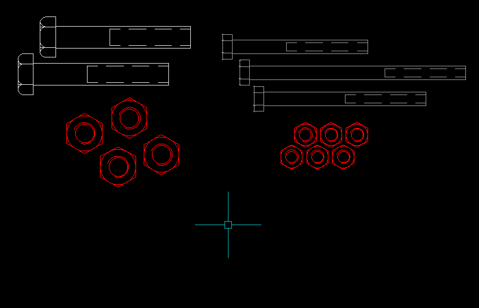

Count Attribute Values
This page is delivered for consistency purposes only, as part of the LeeMac sample module of DynALisp, which shows how DynALisp turns existing AutoLISP programs into a module. The program and its description are the work of Lee Mac, who keeps all the credit for them. The original page, with the latest version, is on Lee Mac's website: https://lee-mac.com/countattributevalues.html
| Function Syntax | LM-CountAttributeValues – original syntax: cav (see aliases) |
| Current Version | 1.1 |
| Compatible with AutoCAD for Mac? | No |
| Compatible with AutoCAD LT? | Yes |
| Original Page | lee-mac.com/countattributevalues.html |
Program Description
This program enables the user to count the number of occurrences of attribute values across all or specific attribute tags in a selection of attributed blocks, ideal perhaps for when compiling a Material Take Off (MTO) in which material/part references may be stored in block attributes, among other use cases.
Upon issuing the command syntax cav (Count Attribute Values) at the AutoCAD command line, the user is prompted for a selection of attributed blocks whose attribute values are to be counted. If multiple attribute tags are found in the selection, the user will be presented with a dialog from which they may select the tags of attributes whose values are to be counted.
The user is then prompted to specify an insertion point for the table displaying the results of the count, with values sorted ascending alphabetically.
Note that this program may only be run on CAD platforms which support table objects.
Predefined Attribute Tags
By default, the program will consider all attribute tags held by blocks in the selection, with the user prompted to select one or more tags whose values are to be counted if multiple attribute tags are encountered.
However, the user can optionally predefine the tag or set of tags to be counted (thereby avoiding the dialog prompt) by populating the tag list argument supplied to the main function - this argument is empty by default:
(defun c:cav ( ) (cav:main "" ;; Optional Table Title '("Value" "Count") ;; Optional Table Column Headings '( ) ;; Optional predefined tag list (may use wildcards) ) )
The tag list argument is case-insensitive and also supports the use of wildcard operators (e.g. specifying '("PART*" "*TAG") will cause the program to count the values of attributes whose tags either start with PART or end with TAG).
As indicated by the above code block, the user also has the option to specify a title for the table and revise (or even remove) the table column headings, depending on the output desired.
Demonstration

Bundled program notes
;;-----------------=={ Count Attribute Values }==-------------;;
;; ;;
;; Counts the number of occurrences of attribute values in a ;;
;; selection of attributed blocks. Displays result in an ;;
;; AutoCAD Table object. ;;
;;------------------------------------------------------------;;
;; Author: Lee Mac, Copyright © 2011 - www.lee-mac.com ;;
;;------------------------------------------------------------;;
Command Names And Aliases
As in every DynALisp module, each program of this sample module has one main command, named LM-*, and the original command names of Lee Mac's page are kept as its aliases: they run the same command, and can be added, renamed or removed in Dyl-Suite (saved in Resources\Aliases.csv).
| Command | Aliases | Name |
|---|---|---|
| LM-CountAttributeValues | CAV, COUNTATTRIBUTEVALUES | Count Attribute Values |